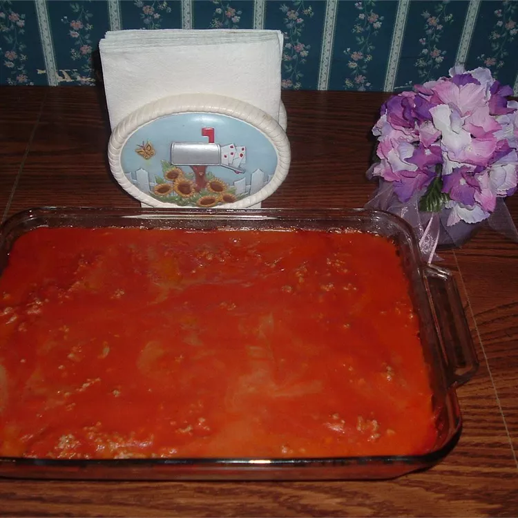

Easy Easy Casserole

Ingredients
- 1 ½ pounds ground turkey
- 4 potatoes, peeled and sliced
- 2 tablespoons butter
- salt and pepper to taste
- 1 (15 ounce) can cream-style corn
- 1 (10.75 ounce) can condensed tomato soup
Steps:
- Step 1
Preheat oven to 350 degrees F(175 degrees C)
- Step 2
In a large skillet over medium-high heat,
place the turkey and saute for 5 to 10 minutes, or until browned.
- Step 3
Place the sliced potatoes in the bottom of a lightly
greased 2-quart casserole dish, cover with butter and season with salt and
pepper to taste. Then layer the cream-style corn over the potatoes, top with
the browned turkey meat, and then top with the tomato soup.
- Step 3
Cover and bake at 350 degrees F(175 degrees C) for 60 minutes
Main page